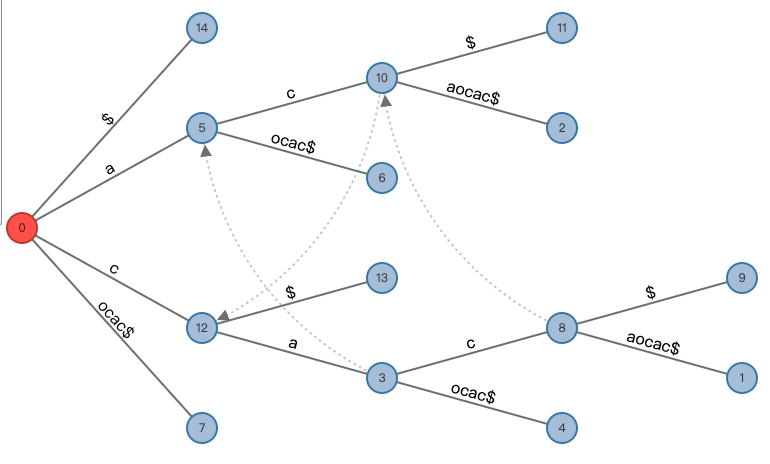

An implementation of generalized suffix tree using Ukkonen’s algorithm.
In this page:
Inspired by:
Ukkonen, E. On-line construction of suffix trees. Algorithmica 14, 249–260 (1995).
https://www.cs.helsinki.fi/u/ukkonen/SuffixT1withFigs.pdf
The longest common substring problem
Given two or more strings, find the longest common substring of these strings. Concretely, the longest common substring of the two strings “cacaocac” and “ccaooc” is “cao”. This seems like a simple problem, but until today, it still requires a complicated algorithm to be solved in a reasonable time.
This repo has implemented an algorithm to solve this problem by constructing a tree called Generalized Suffix Tree (GST). GST is a tree structure which contains sets of suffix strings of the origin string. Usually, the string will be appended a unique character "$" for representing “the end”, this is to avoid some nodes not splitting due to repeated ending characters.
There are 2 algorithms for constructing a GST: McCreight’s algorithm (1976), Ukkonen’s algorithm (1995). The latter has been implemented here.
The visualized GST of “cacaocac$” as follows, made in http://brenden.github.io/ukkonen-animation/ :

How it works
After cloning this repo, we can get the same result by running these codes in the Application.py:
tree = STree()
tree.build_with_automatic_end(["cacaocac"])
print(tree)
and then, something will appear in the console:
cacaocac$ ----> ⊥
c ----> cacaocac$
a ----> a
c ----> c
aocac$ (end)
$ (end)
ocac$ (end)
$ (end)
a ----> cacaocac$
c ----> c
aocac$ (end)
$ (end)
ocac$ (end)
ocac$ (end)
$ (end)
cacaocac$ for root, ⊥ for auxiliary state*, ----> for suffix link*, and a [tab] represents a deeper level in the tree.
*auxiliary state: The dummy status of the root’s suffix link, for convenience in programming. [Page 3 of the paper for details]
*suffix link: Used during the construction of a suffix tree. [Page 4 of the paper for details]
The method _update, _test_and_split and _canonize of the class STree in STree.py, are the complete implementation of the procedure of the same name in the page [12] and [13] in the paper, and the method build corresponds to the [Algorithm 2.] in the page [14].
But differently, the new end_idxes property in the STree contains the indexes of all ending characters "$". It avoids effectively the construction bias of the suffix tree when the string contains or is filled with "$" symbols.
So, back to the topic, how does this tree solve the longest common substring problem?
In the Application.py, the lcs2 function find the lcs of two strings. The method build_with_automatic_end in the STree will concatenate a list of strings with the ending characters "$", and construct a suffix tree. With the help of end_idxes, these "$" are different, and they represent the end of different strings. STree will automatically treat these "$" as different from other characters, so the character "$" itself is just designed for readability of suffix tree printing. The lcs2 function will traverse the tree and find the deepest non-leaf node that contains the leaf nodes of all string indexes in the string list.
Similarly, it can also be demonstrated using the following codes in Application.py
print(lcs2("cacaocac", "ccaooc"))
or
print(lcs(["cacaocac", "ccaooc"]))
The lcs function can find the longest common substring of multiple strings.
The last two commands have the same result:
cao
GST versus Dynamic programming
Dynamic programming is another way to solve this problem, and there is always said that the dynamic programming costs $\Theta(mn)$, and the Ukkonen’s Algorithm just in linear time. So, let’s start an experiment.
The code in the gst_vs_dp.py, we randomly generated some strings to examine the performance of the two algorithms.
len is the length range of the strings, com_len is the length range of the common part of the strings.
len = (800, 1600) com_len = (100, 200)
random string has been generated
gst_res: wTE^s>:x,k~%i3pRtdasZ>eLXrU5gbU#ptQF*?$ta,)k~znS*D/Ja:0L}@.X~i~E~{@NsKlK5c#`4v?v.$O]ts&/LNl<m]ww`Z!4G3vPd:@guRfCuz3DSRNHcVu~[r7s8J`X&/uETtiU[$N0p2.$SV2T><WTzqLVm:KkC3uE#2SIj63h?3BZYv;G*bl'PnNYhQ0M
dp_res: wTE^s>:x,k~%i3pRtdasZ>eLXrU5gbU#ptQF*?$ta,)k~znS*D/Ja:0L}@.X~i~E~{@NsKlK5c#`4v?v.$O]ts&/LNl<m]ww`Z!4G3vPd:@guRfCuz3DSRNHcVu~[r7s8J`X&/uETtiU[$N0p2.$SV2T><WTzqLVm:KkC3uE#2SIj63h?3BZYv;G*bl'PnNYhQ0M
gst_time: 12.598991394042969 ms
dp_time: 284.3668460845947 ms
len = (5000, 8000) com_len = (250, 800)
random string has been generated
gst_res: q3U'GCA9;dw}9nrT#R?"odw~HAK,&l;bd}VQ)h`15TAw6K/I1V]#;OSDj%(XmDp[&i}@$k($Bk8X4c"j(rXff9MK:E#`>B&'SF`CgMP<`XOp!8g%&4fpbq<!Q*o4[9W}TXabj4FTele0?~Cm.S,8~)B(U9<m~[1.9/3XGR/@nIt,X3@k}D"U"h@!/C&92s09RU^DLrqo6[}s}Wlr:,VyYX>f{rx&>8bH`VaZy^3pId.A]XO/zgD@26wN:Y23@t(.>3$T6c8?L'l"ZC?0PK,2tWNqa,S>VTe!!%L^n;;up<:Hw;gUtFp^dD]F8>!'}vg^PNK4K"L7X<w;roH:&<jEzZJJPg5qd'J!SWTP%N!CDDaxr7vBX.4@)9OO!Mg;S;M';VSV]^YZO9ww9k$H;Z^XcXKY@?Naa<jO$LEy`#e1&ywU8Yzq9PNAA^gQ58B?'?)KiKt)$ztM~IrnJ<$;2%%?m"<dme7df>:b?j.A8dM2dH/!K!*o)glG[F><aZ?c`By5{zEICgq[<M:D"LD;*FPJOzo9o,wXxKz@2];:g$oNrDhc/g{M9z9xTP[FllH/r!YrW!KMG!y(.$mO7Wzj31vMF2>YD?Y"I?t7FX!nWL[S>kLN1Ga7YN'XrG*fxylmtBri/R!0nEGQ3ZG`xQ1o[~Z?1<VKMzKn90J^9#5J<:{3diD*o4Fn.WppQJ7>Z#1cQgV2(GX54S*)0@vQvFs^!/fag#p6kHgwB9{5)u:d9R
dp_res: q3U'GCA9;dw}9nrT#R?"odw~HAK,&l;bd}VQ)h`15TAw6K/I1V]#;OSDj%(XmDp[&i}@$k($Bk8X4c"j(rXff9MK:E#`>B&'SF`CgMP<`XOp!8g%&4fpbq<!Q*o4[9W}TXabj4FTele0?~Cm.S,8~)B(U9<m~[1.9/3XGR/@nIt,X3@k}D"U"h@!/C&92s09RU^DLrqo6[}s}Wlr:,VyYX>f{rx&>8bH`VaZy^3pId.A]XO/zgD@26wN:Y23@t(.>3$T6c8?L'l"ZC?0PK,2tWNqa,S>VTe!!%L^n;;up<:Hw;gUtFp^dD]F8>!'}vg^PNK4K"L7X<w;roH:&<jEzZJJPg5qd'J!SWTP%N!CDDaxr7vBX.4@)9OO!Mg;S;M';VSV]^YZO9ww9k$H;Z^XcXKY@?Naa<jO$LEy`#e1&ywU8Yzq9PNAA^gQ58B?'?)KiKt)$ztM~IrnJ<$;2%%?m"<dme7df>:b?j.A8dM2dH/!K!*o)glG[F><aZ?c`By5{zEICgq[<M:D"LD;*FPJOzo9o,wXxKz@2];:g$oNrDhc/g{M9z9xTP[FllH/r!YrW!KMG!y(.$mO7Wzj31vMF2>YD?Y"I?t7FX!nWL[S>kLN1Ga7YN'XrG*fxylmtBri/R!0nEGQ3ZG`xQ1o[~Z?1<VKMzKn90J^9#5J<:{3diD*o4Fn.WppQJ7>Z#1cQgV2(GX54S*)0@vQvFs^!/fag#p6kHgwB9{5)u:d9R
gst_time: 79.45418357849121 ms
dp_time: 10244.915962219238 ms
len = (5000, 8000) com_len = (250, 800)
random string has been generated
gst_res: Hu4XU.if.j/h9DAT3.2RI"9LVeR6qoG}HOB#V[qdN[TQ!%IG#v7l]'4pTA;.G^zhWt%/B0P4ATaG>FDZj?GNH"V%NW(.uL?O.5tJCv6d7[}e.<$SFXv(C&ww>9a'Con(V}MK<exxZ@1.1<7<Wo%wGyjB0FPpcxPLIy^LRZS@c;eel4sUF:iqcGlhz3]z&M&]qk&.H3]vqI7YG)#&}U3sa"6c6H*y{3>9MiHB!W4N1YwR[,qdn:nw$M"g]Ic6S$*[FIzaOZ[fHT<04<$R$[f#.%MscaTy[6?gJ:Qq
dp_res: Hu4XU.if.j/h9DAT3.2RI"9LVeR6qoG}HOB#V[qdN[TQ!%IG#v7l]'4pTA;.G^zhWt%/B0P4ATaG>FDZj?GNH"V%NW(.uL?O.5tJCv6d7[}e.<$SFXv(C&ww>9a'Con(V}MK<exxZ@1.1<7<Wo%wGyjB0FPpcxPLIy^LRZS@c;eel4sUF:iqcGlhz3]z&M&]qk&.H3]vqI7YG)#&}U3sa"6c6H*y{3>9MiHB!W4N1YwR[,qdn:nw$M"g]Ic6S$*[FIzaOZ[fHT<04<$R$[f#.%MscaTy[6?gJ:Qq
gst_time: 63.52519989013672 ms
dp_time: 6668.108701705933 ms
len = (10000, 20000) com_len = (500, 1000)
random string has been generated
gst_res: hee!!i$;hIn8&;Y)bU2BC^Bu{Ek]2}}`SvD>Fj!{%XS#pl6wMh#CDKe'zk%N@mAC]r9[k:g{!Q<B0NQ"#"E<P@in$7]^fkn3tO:5q:lb%!Y5N3[rJBd7I@,6Uf{hNv5o$M%~]~9IS4#ho}]3A"~B9yLF!0'`R(}le0KAMF/J7@EG/d&W/m`XcBt[,Bp0M8m6J]%#mh.^":CsZw6~!w6eq[)WdAI/'D`Tq.`*t[H5yVEk3mpRKZv<eMZj'R?*zeA,!goeNt"5th.0^LN2xB$wy.*xP(cCW4)zZv#XS.#<&*"spzHfnG:78~P5z%a`Dn1g3>nF5CZm?;EfbKD/(g$!SIAxSRWce"Qf'WbyceqGrh>uhP45R$:h?fJfEFk]@5P{]n2H/KgDGUA~`Q1'<Z}66!s#V>B%>B1L3cIq?;ytc/E?mDmA2;m5LwdI@8)l3@&ZpdKp0'f{VS@ahmmE!f.)kO(nNcVsU?yGEAzu"I/RH:N6"1xFvp~ipR~$7FJ@NLTs[VW^hng1bfc&!ieEbY.)uYN@Ux$(#~]WSyY/alVsiq1uv0u%tVx'kS>x}dkUN5&lY!xy&Y]:wZU;gIXZ>h)mS7,au
dp_res: hee!!i$;hIn8&;Y)bU2BC^Bu{Ek]2}}`SvD>Fj!{%XS#pl6wMh#CDKe'zk%N@mAC]r9[k:g{!Q<B0NQ"#"E<P@in$7]^fkn3tO:5q:lb%!Y5N3[rJBd7I@,6Uf{hNv5o$M%~]~9IS4#ho}]3A"~B9yLF!0'`R(}le0KAMF/J7@EG/d&W/m`XcBt[,Bp0M8m6J]%#mh.^":CsZw6~!w6eq[)WdAI/'D`Tq.`*t[H5yVEk3mpRKZv<eMZj'R?*zeA,!goeNt"5th.0^LN2xB$wy.*xP(cCW4)zZv#XS.#<&*"spzHfnG:78~P5z%a`Dn1g3>nF5CZm?;EfbKD/(g$!SIAxSRWce"Qf'WbyceqGrh>uhP45R$:h?fJfEFk]@5P{]n2H/KgDGUA~`Q1'<Z}66!s#V>B%>B1L3cIq?;ytc/E?mDmA2;m5LwdI@8)l3@&ZpdKp0'f{VS@ahmmE!f.)kO(nNcVsU?yGEAzu"I/RH:N6"1xFvp~ipR~$7FJ@NLTs[VW^hng1bfc&!ieEbY.)uYN@Ux$(#~]WSyY/alVsiq1uv0u%tVx'kS>x}dkUN5&lY!xy&Y]:wZU;gIXZ>h)mS7,au
gst_time: 164.72983360290527 ms
dp_time: 44179.36301231384 ms
Obviously, dynamic programming takes a lot longer time.